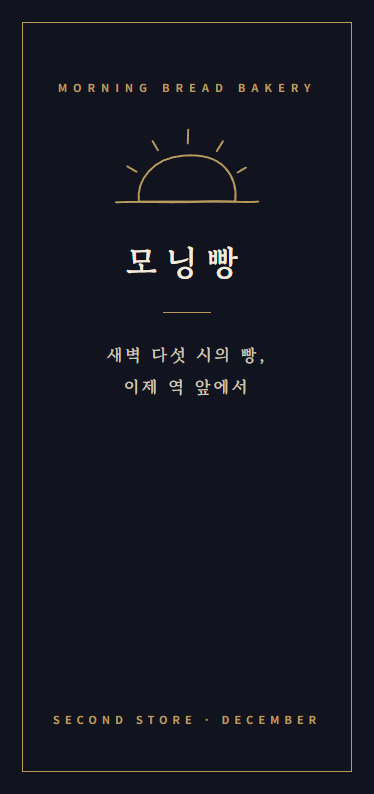
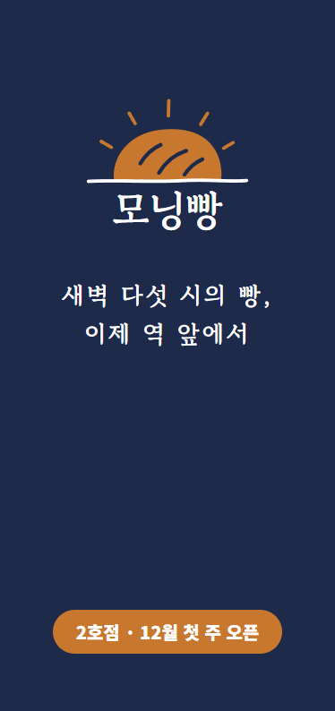

실제 Claude 결과물 · 브로셔 표지
그대로 넘김
말로 바꿔 넘김


좀 더 고급스럽게?
근데
비싸 보이면
안 돼요.
이걸 어떻게 넘기지?
좀 더 고급스럽게 해 줘.
실제 결과 · 그대로 넘김
검정 + 금색
오픈 날짜는 작은 영어로
비싸 보여요
"좀 더 고급스럽게"
"비싸 보이면 안 돼요"
↓
고칠 수 있는 말
색 · 크기 · 간격 · 무엇을 빼고 남길지
1
색은 남색·갈색 두 개만
고급스럽게
2
제목 자간 넓게, 한 단계 작게
고급스럽게
3
여백은 지금의 두 배
고급스럽게
4
장식은 빼기
고급스럽게
5
'12월 첫 주 오픈'은 크게 그대로
비싸 보이면 안 돼요
실제로 보낸 지시를 다섯 줄로 나눈 것
실제 결과 · 말로 바꿔 넘김
여백 두 배 · 장식 뺌
오픈 날짜는 크게
오늘의 결론
느낌은
숫자와 규칙으로